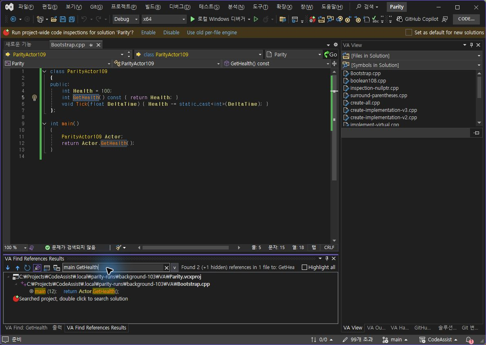
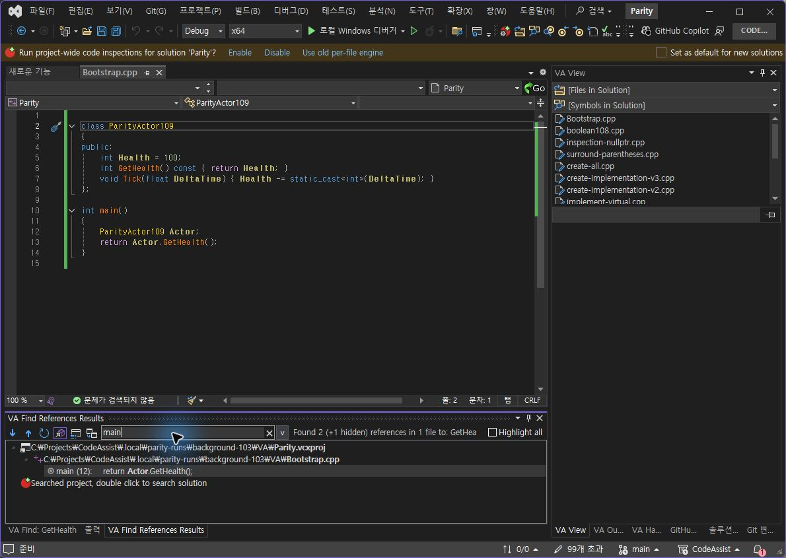
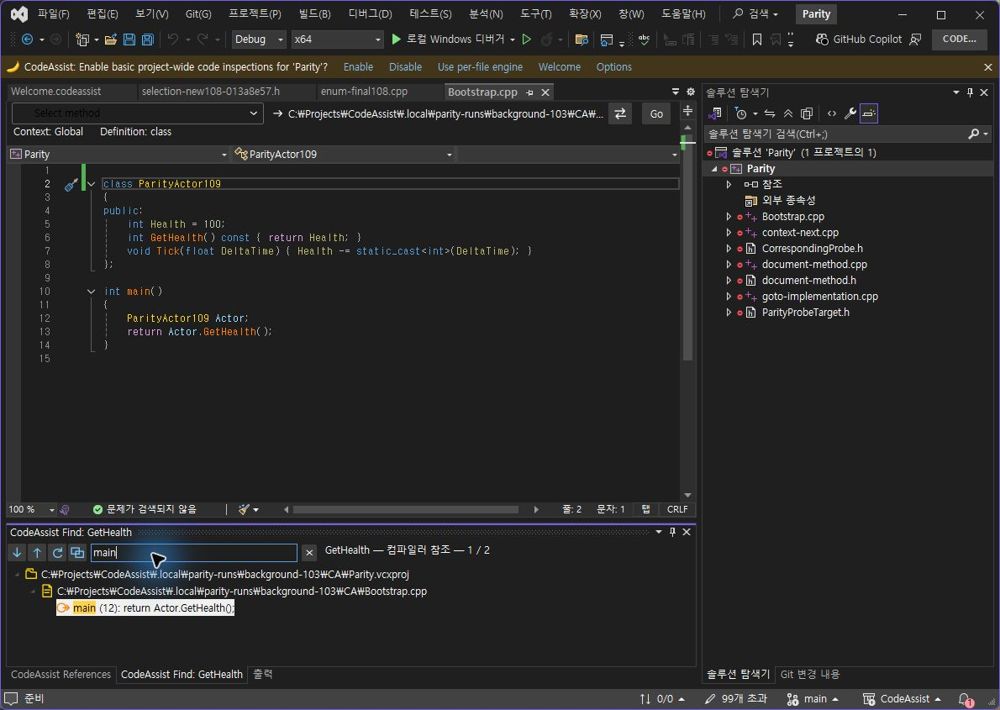
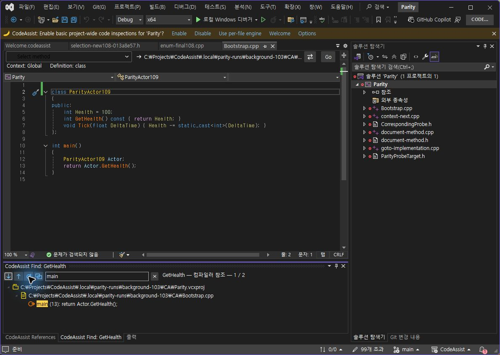
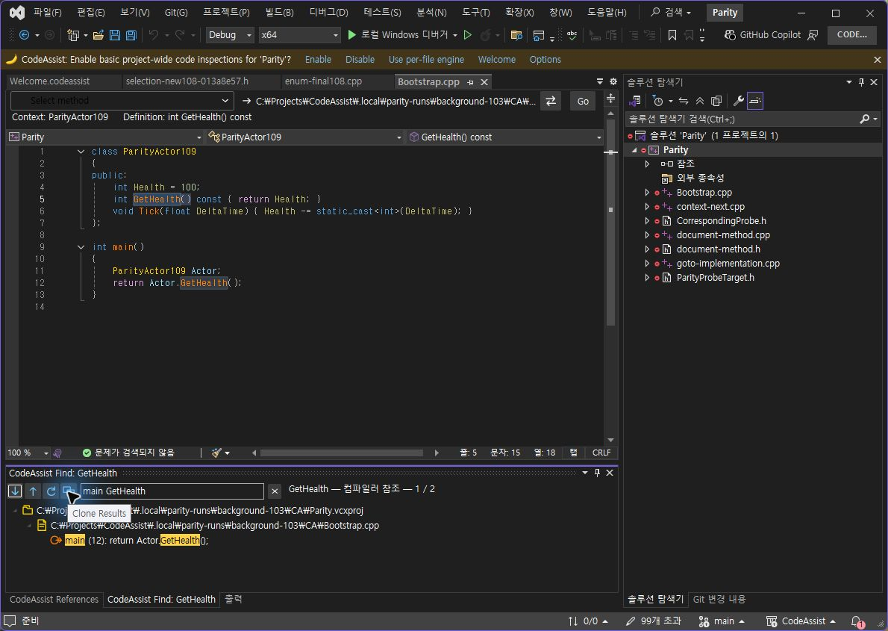
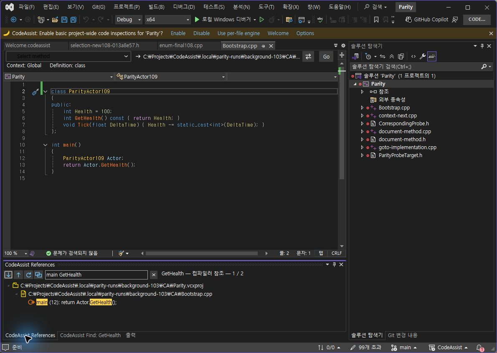

Tracefolio REPORTS & ISSUES
Tracefolio REPORTS & ISSUESCA 0.0.116 — 참조 창 1차 리팩토링·최적화
기존 기록 이전원문에 기록된 작업 내용과 당시 검증 범위를 정리한 보관 기록입니다.
0.0.116 참조 창 리팩토링·최적화
CA 0.0.116 — 참조 창 1차 리팩토링·최적화
구조 변경
ReferenceSearchState: 결과·설명·심볼·프로젝트·재검색 콜백과 표시 스냅샷을 하나의 불변 검색 상태로 관리합니다.
ReferenceDisplaySnapshot: 문서를 파일별 한 번 읽어 캡션·문맥·위치를 준비합니다. 필터·복제는 문서를 다시 읽거나 문맥을 다시 분석하지 않습니다.
ReferenceFilterQuery: 검색어를 한 번 분해해 모든 행에 재사용합니다. 강조 표시도 같은 검색어 목록을 사용합니다.
새로 고침은 해당 창에 새 상태를 만들고 복제 창의 기존 상태는 유지합니다. 늦게 끝난 이전 재검색이 새 검색 상태를 덮어쓰지 않도록 참조 동일성 검사를 추가했습니다.
레이아웃·아이콘·실제 명령·단축키 등록은 바꾸지 않았습니다. Build는 순수 표시 데이터만 소비하도록 정리했습니다.
성능 측정 — 순수 관리 코드 경로
같은 7,578자 C++ 원문·1,200개 참조·8개 검색어, 7회 표본의 중앙값입니다. 모든 결과 캡션과 순서가 동일한지 먼저 검사했습니다. 0.0.115의 필터·문맥 알고리즘은 벤치마크 폴더에 보존했습니다.
| 측정 범위 | 기존 | 변경 |
|---|---|---|
| 8개 검색어 반복 필터 처리 | 261.553 ms | 0.762 ms — 99.71% 감소 |
| 준비 비용을 한 번 포함한 8개 필터 묶음 | 261.553 ms | 66.918 ms — 74.42% 감소 |
| 반복 필터 중 임시 할당 | 28,976,256 bytes | 174,528 bytes — 99.40% 감소 |
스냅샷 준비: 최초 150.504ms, 준비 7회 중앙값 66.155ms. 임시 할당 감소 수치는 준비 비용을 제외한 반복 필터 경로입니다. 프로세스 메모리 감소율이 아닙니다. 컴파일러 검색·DTE/COM·WPF 컨트롤 생성 및 레이아웃·IDE 시작은 이 벤치마크에 포함하지 않습니다. 앱 전체가 같은 배수로 빨라졌다고 해석하지 않습니다.
원시 표본·계산 입력 · 재현 방법과 한계
실제 VA 대조: 같은 필터·이동
동일 원본의 GetHealth를 실제 Alt+Shift+F로 검색하고 main GetHealth 입력. 양쪽 호출 12행 한 개만 표시됐으며 더블클릭하면 12:15→12:24 GetHealth를 선택했습니다.
VA 필터

CA 필터

문서 변경 뒤 캐시 수명
양쪽 파일 첫 줄에 빈 줄을 삽입·저장했습니다. main으로 필터만 변경할 때 양쪽 모두 기존 스냅샷의 12행을 유지했습니다. 새로 고침 후에는 이동한 13행으로 갱신됐습니다. VA 첫 좌표 클릭은 갱신을 일으키지 않아 제외하고 새 접근성 관찰의 Refresh 버튼으로 재실행했습니다.
VA 필터만 변경 — 기존 12행

CA 필터만 변경 — 기존 12행

VA 새로 고침 — 13행

CA 새로 고침 — 13행

CA 복제 독립성 — 별도 확인
복제는 main GetHealth와 표시 한 행을 보존했습니다. 복제만 새로 고쳐 13행으로 갱신한 뒤 원본으로 전환하면 원본은 이전 12행·기존 필터를 유지했습니다. 이 단독 확인은 VA 대조 표본 수에 추가하지 않습니다.
복제 시 상태 보존

복제 재검색 후에도 원본 독립 유지

검증과 복구
Core 테스트 325/325, VS2019·Modern 빌드 성공, 검사 프로필 설치 6/6 바이너리 해시 일치. 두 파일 원본 본문·저장 상태·SHA256 8A9D8AD69A16FB6813230BE6B2DB5A5717D5DEB55B426B092465777AF2884188 복구 확인. 시험 중 찍은 13행 화면은 당시 스냅샷입니다.
판정 및 계산 · 테스트 로그 · 설치 근거 · VA 선택 범위 · CA 선택 범위
남은 검증·작업
인위적으로 지연한 동시 재검색의 실행 검증은 아직 하지 않았습니다. 방어 코드는 이번에 추가했습니다.
IDE 전체 지연·프로세스 메모리·대규모 WPF 트리 렌더링은 별도 측정이 필요합니다.
같은 VA 검색을 반복했을 때 필터가 유지되는 것을 관찰했습니다. 일반 초기화 규칙은 다른 심볼로 추가 검증해야 합니다.
상속·전체 프로젝트·숨김 필터와 전체 제품 동기화 목표는 미완료입니다.
XERJ: 사용 — v3에서 참조 창·문맥·필터 위치를 검색하고 현재 소스를 직접 확인했습니다. 전체 목표는 진행 중입니다.
원문과 편집 이력
- 원문 SHA-256:
6b2c1022652651e51abb99cf0b4ade73d99c88b7a342ed64006dbb566f90e76f - 표시 날짜는 원본 파일의 수정 시각입니다. 작업 완료 시각은 원문에 있는 값을 기준으로 확인합니다.